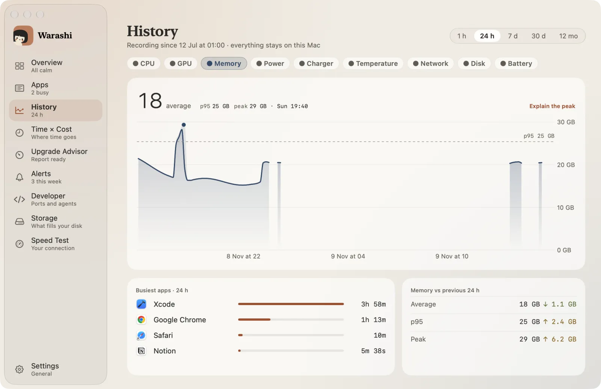
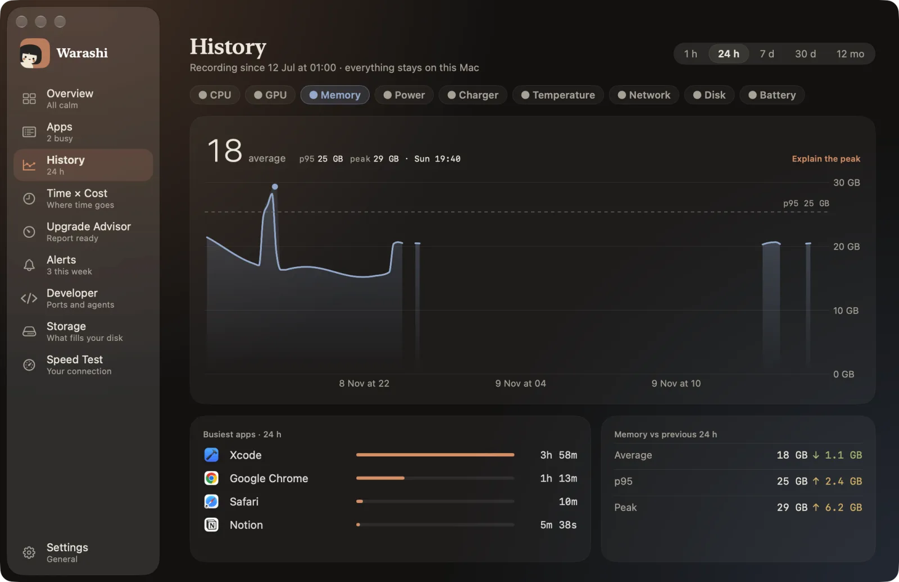

“我需要多大的内存？”是购买 Mac 之前最常见的问题，也是最靠猜的问题。实事求是的答案是：看你的内存压力怎么说，而不是看“已用内存”怎么说。
为什么“已用内存”会误导你
macOS 认为闲置的内存就是浪费。它会用文件缓存把内存填满，并压缩 App 的内存而不是直接丢弃。因此一台显示“已用”15 GB（共 16 GB）的 Mac 完全可能运行得很从容。
应该看什么
- 内存压力：活动监视器“内存”标签页中的绿色、黄色或红色。这表示 macOS 为了腾出内存而付出了多大的努力。
- 已用交换：写出到磁盘上的内存。少量属于正常；如果每天都有几 GB，就说明内存不足。
- 已压缩：为腾出空间而被压缩的内存。压缩量很高且压力不断上升，说明你已接近极限。
经验法则
| 一个典型的一周中你会看到 | 含义 |
|---|---|
| 压力为绿色，交换接近零 | 内存足够。再增加内存也不会让它更快。 |
| 忙碌的日子里为黄色，有一些交换 | 你已到达极限。下一台 Mac 应该再大一档。 |
| 大多数日子为黄色或红色，交换达到数 GB | 内存不足。应该再大一到两档。 |
用测量代替猜测
难点在于，你需要的是一周或一个月、涵盖最忙那几天的数据，而不是在清闲的下午瞄上一眼。Warashi 的升级顾问每天记录内存压力和交换情况，30 天后会推荐一个 Apple 实际销售的内存容量，并附上依据。


Warashi 可以替你完成这件事。它在后台记录你的 Mac 的历史，让你可以回头查看当时发生了什么，而不必现场去捕捉。当内存长时间不足时，它还能提醒你。下载免费 Beta 版 →